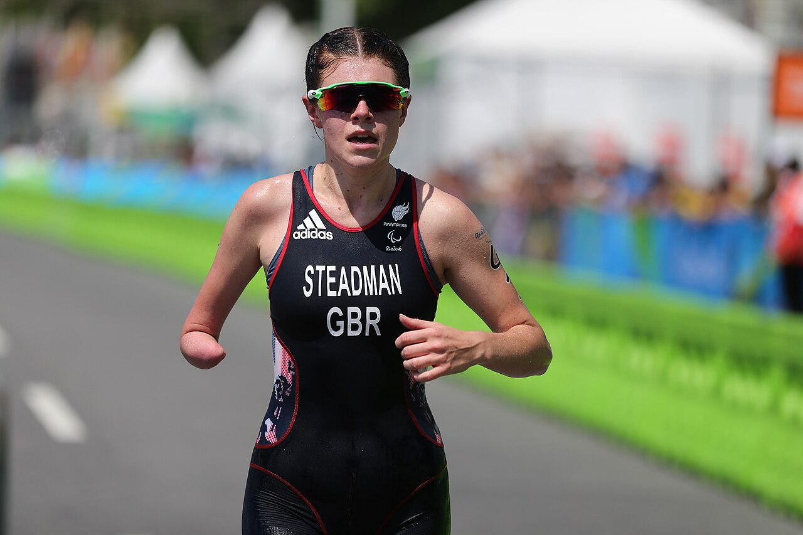

Natation — 400 m
En eau calme, dans un bassin balisé. Mise à l'eau assistée par des bénévoles et des rampes d'accès, départ possible depuis l'eau.
Le Triathlon Tous Ensemble est une compétition de paratriathlon ouverte aux personnes à mobilité réduite, débutantes ou confirmées. Natation, vélo et course s'enchaînent sur des parcours entièrement adaptés.
Le paratriathlon est la version adaptée du triathlon, discipline paralympique depuis les Jeux de Rio en 2016. Les athlètes enchaînent trois épreuves sans pause : la natation, le cyclisme et la course à pied. Le matériel et les règles s'adaptent au handicap de chacun : fauteuil de course, handbike, vélo tandem avec un guide, prothèses…

En eau calme, dans un bassin balisé. Mise à l'eau assistée par des bénévoles et des rampes d'accès, départ possible depuis l'eau.
Boucle plate et fermée à la circulation. Handbike, vélo, tricycle ou tandem avec guide pour les personnes déficientes visuelles.
En fauteuil de course ou à pied, avec ou sans prothèse, sur un revêtement lisse et sans dénivelé.
L'épreuve est ouverte à toute personne de plus de 16 ans en situation de handicap moteur ou visuel. Deux formats sont proposés :
| Format | Distances | Public |
|---|---|---|
| Découverte | 200 m / 5 km / 1,2 km | Débutants, sans classement |
| Compétition | 400 m / 10 km / 2,5 km | Athlètes licenciés ou entraînés, classement par catégorie |
| Relais en équipe | Une épreuve par personne | Équipes mixtes valides / personnes handicapées |